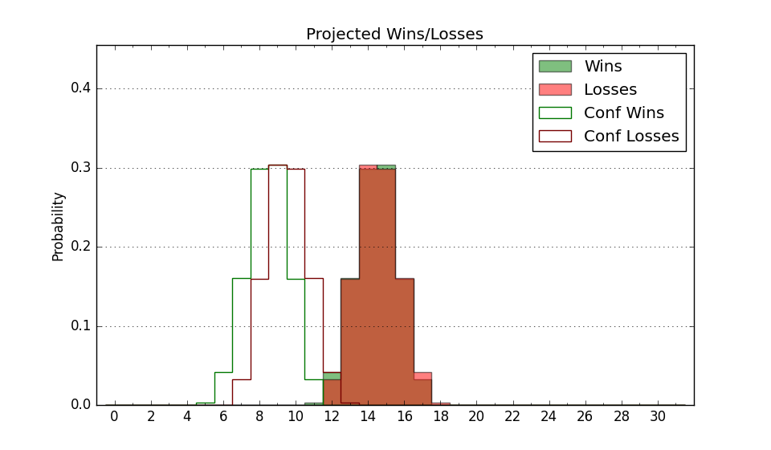

| Home | Game Probabilities | Conferences | Preseason Predictions | Odds Charts | NCAA Tournament |
| City: | Towson, Maryland | |
| Conference: | Colonial (10th)
| |
| Record: | 5-7 (Conf) 11-12 (Overall) | |
| Ratings: | Comp.: -0.7 (171st) Net: -0.7 (172nd) Off: 103.2 (264th) Def: 103.8 (87th) SoR: 0.0 (102nd) |
| Remaining | ||||||
|---|---|---|---|---|---|---|
| Date | Opponent | Win Prob | Pred. | |||
| 2/12 | Stony Brook (223) | 75.1% | W 68-61 | |||
| 2/14 | @ Monmouth (200) | 40.5% | L 63-65 | |||
| 2/21 | @ Drexel (216) | 44.3% | L 60-62 | |||
| 2/26 | Elon (204) | 70.3% | W 74-69 | |||
| 2/28 | Campbell (208) | 71.3% | W 75-68 | |||
| 3/3 | @ Stony Brook (223) | 47.0% | L 64-65 | |||
| Previous | Game Score | |||||
| Date | Opponent | Win Prob | Result | Off | Def | Net |
| 11/3 | (N) Loyola MD (332) | 85.5% | W 67-56 | -12.6 | 12.7 | 0.1 |
| 11/8 | @Houston (7) | 1.7% | L 48-65 | -8.6 | 26.7 | 18.1 |
| 11/14 | Norfolk St. (314) | 89.2% | W 51-41 | -25.3 | 20.7 | -4.5 |
| 11/18 | @James Madison (229) | 48.9% | L 75-81 | 16.2 | -27.5 | -11.3 |
| 11/24 | (N) Rhode Island (136) | 40.1% | W 62-55 | 5.5 | 17.1 | 22.6 |
| 11/25 | (N) Liberty (94) | 28.2% | W 72-69 | 12.4 | 4.1 | 16.5 |
| 11/26 | (N) UC San Diego (130) | 38.2% | L 73-87 | 12.7 | -37.6 | -24.9 |
| 12/3 | Cornell (155) | 61.5% | W 93-80 | 20.9 | -4.2 | 16.8 |
| 12/7 | @UCF (51) | 9.2% | L 61-86 | -0.8 | -16.3 | -17.1 |
| 12/16 | @Kansas (12) | 2.3% | L 49-73 | -5.1 | 4.9 | -0.2 |
| 12/22 | Sacred Heart (300) | 87.8% | W 72-47 | -7.1 | 24.4 | 17.3 |
| 12/29 | @William & Mary (128) | 24.7% | L 70-84 | 1.4 | -13.3 | -11.9 |
| 12/31 | @Hampton (247) | 52.3% | L 62-63 | 0.7 | -6.2 | -5.5 |
| 1/3 | Monmouth (200) | 69.9% | L 48-62 | -28.9 | -3.6 | -32.5 |
| 1/8 | Hofstra (103) | 44.4% | L 67-78 | -6.4 | -15.9 | -22.3 |
| 1/10 | @Northeastern (259) | 55.7% | W 87-78 | 22.3 | -7.3 | 15.0 |
| 1/15 | College of Charleston (175) | 65.4% | W 61-52 | -16.5 | 26.9 | 10.4 |
| 1/19 | Drexel (216) | 73.0% | W 59-58 | -9.8 | 2.1 | -7.7 |
| 1/22 | @Elon (204) | 41.0% | W 72-59 | 17.8 | 15.4 | 33.3 |
| 1/24 | @North Carolina A&T (265) | 57.3% | L 73-80 | -0.4 | -11.4 | -11.8 |
| 1/29 | UNC Wilmington (118) | 49.0% | L 73-82 | 9.1 | -26.0 | -16.8 |
| 1/31 | Hampton (247) | 78.9% | W 82-50 | 16.1 | 16.6 | 32.7 |
| 2/7 | @Hofstra (103) | 19.0% | L 49-71 | -17.5 | -4.3 | -21.8 |
| Stats & Trends | |||||
|---|---|---|---|---|---|
| Current | Day | Week | Month | Season | |
| Composite | -0.7 | -0.0 | -1.0 | +2.7 | +1.4 |
| Comp Rank | 171 | +2 | -12 | +23 | -22 |
| Net Efficiency | -0.7 | -0.0 | -1.1 | +2.9 | -- |
| Net Rank | 172 | +2 | -10 | +34 | -- |
| Off Efficiency | 103.2 | +0.0 | -0.8 | +1.8 | -- |
| Off Rank | 264 | -- | -13 | +18 | -- |
| Def Efficiency | 103.8 | -0.0 | -0.3 | +1.1 | -- |
| Def Rank | 87 | -- | -4 | +29 | -- |
| SoS Rank | 157 | +3 | +14 | -37 | -- |
| Exp. Wins | 14.5 | +0.0 | -0.4 | +0.9 | -1.4 |
| Exp. Conf Wins | 8.5 | +0.0 | -0.4 | +0.9 | -2.7 |
| Conf Champ Prob | 0.0 | -0.0 | -0.0 | -0.1 | -22.9 |

| Advanced Stats | ||
|---|---|---|
| Stat | Value | Rank |
| Off Eff FG % | 0.455 | 342 |
| Off Ast Ratio | 0.106 | 362 |
| Off ORB% | 0.361 | 41 |
| Off TO Rate | 0.140 | 125 |
| Off FT Ratio | 0.307 | 289 |
| Def Eff FG % | 0.503 | 141 |
| Def Ast Ratio | 0.134 | 82 |
| Def ORB% | 0.261 | 42 |
| Def TO Rate | 0.143 | 209 |
| Def FT Ratio | 0.313 | 79 |